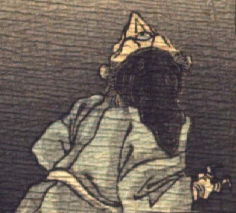

鬼。のけぞった後姿が描かれている。黒い頭巾状のものをかぶり、額の真ん中に大きな目玉がついている。突き出した口は、嘴のように見える。青い着物を着ている。手指は皺が寄り、鳥の足を思わせる。
著作者：J.Dautremer／出典：親書誌：U426_nichibunken_0123：Le vieillard et les démons／日付：2006／資源識別子：U426_nichibunken_0123_0004_0003
Copyright (c)2010- International Research Center for Japanese Studies, Kyoto, Japan. All rights reserved.